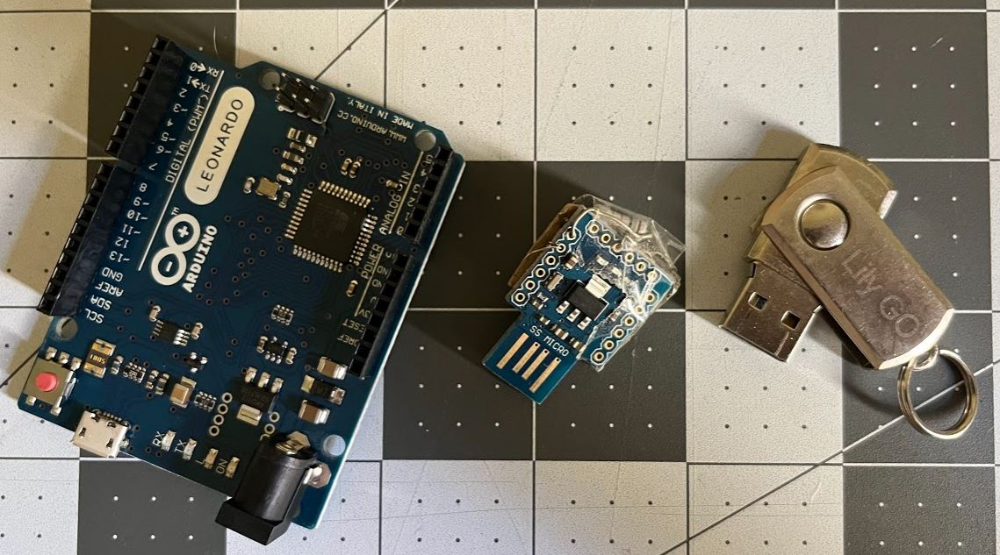

Using two-factor authentication is a great way to add extra protection to your online accounts.
I'll explain real quick if you don't know what I am talking about. Normally when you log into a website, you enter your username and password, and you are done. Your password is a single factor of authentication. A lot of web sites let you add a second step of authentication for added security. A popular form is a time-based code on your phone that changes every 30 seconds. You must type in this code when logging in online. Once your phone is registered with the website, it will know how to generate the code. The code is always changing so even if someone watches you type it in, it will be of no use to them since the code expires 30 seconds later.
Looking up these codes on your phone and typing them in every time you access an important online account is a pain. There is always some time pressure to locate the code and type it in before it expires. It is easy to mistype the code. When you mistype you need to start all over.
You could use a software-based authenticator on your computer like Authy or a hardware authenticator like a YubiKey.
If you are thinking, "I use Authy on my computer to paste in my 2FA codes. It is no hassle at all."
The problem with software-based authenticators on your computer is that the secret seed codes are stored inside your computer. If your computer falls into the wrong hands then so do your 2FA codes. (I still use Authy for most of my accounts.)
It is much safer to keep your 2FA secrets physically separated from your computer in your phone or a specialized hardware device such as a YubiKey. However, a YubiKey costs around 50 bucks. Instead, I'm going to show you how to make your own hardware authenticator for closer to $5 using an Arduino.
Ok, let's get started. First, you will need an Arduino that can pretend to be a keyboard connected to your computer. Check out the Arduino keyboard library docs for compatible units. I have had good luck with the Arduino Leanardo, SS Mico, and BadUSB. I like the BadUSB since it is a nice looking USB stick. These are frequently used for nefarious purposes, but instead, we are using them for good and that is why I call this project Good USB. The Lily GO BadUSB looks really nice, but has no button. 
I bought all of mine on AliExpress. There are all kinds of form factors. Search for ATMEGA32U4 Arduino. Prices have gone up since I first made this project in 2017, but there are still some good deals on this hardware and chances are you already have a compatible unit if you are into Arduinos.
The Arduino works with a companion app that runs on your computer. The companion app is what you use to tell the Arduino which of your accounts to type the code for. Optionally, you can add a button to your Arduino that will type the 2FA code when you press the button. Without the button, the Arduino will type the code 2 seconds after you select the account in the companion app. Wire it up following the Arduino button page.
Let's see it in action. Here I am browsing to my ProtonMail account and I am typing in my username and password. My ProtonMail account is asking for a 2FA code, so I'm clicking on the ProtoMail account button in the companion app. The app then sent a message to the Arduino telling it the current system time and to use my codes for my ProtonMail account. I click back to the 2FA field in ProtonMail in anticipation of the Arduino typing the code. Next, I press the button on my Arduino. The Arduino computes the 2FA code using the current time and secret seed code stored within it. Then it pretends to be a keyboard and types the 2FA code into my computer. I'm in!
All the code is on Github.
This project right now is a proof of concept. There is a lot that can be done to make it more secure and easier to use. There are probably some easy attacks that could extract the secret seed codes from the Arduino. It also only supports one protocol at the moment.
Registering new services on the Arduino is a bit technical right now, but this can be improved in the future. I'll write up a guide if there is interest.